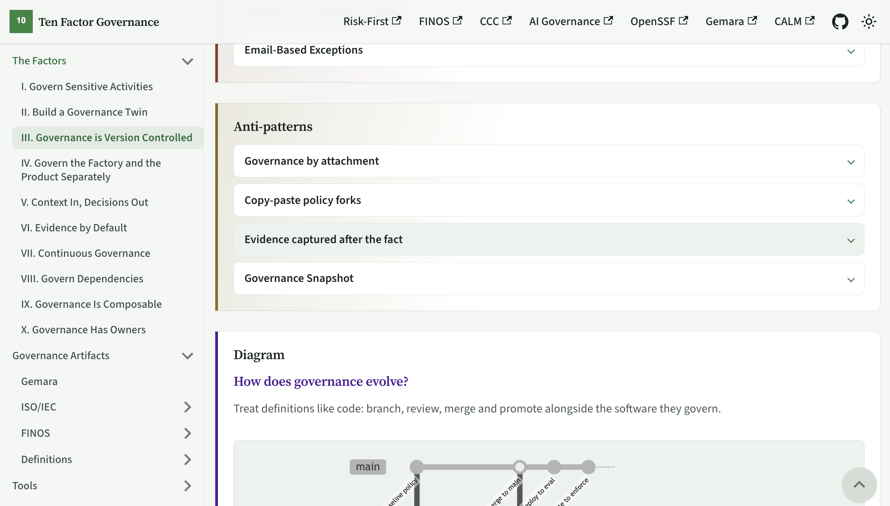

Ten Factor Governance
- 01 Govern Sensitive Activities
- 02 Build a Governance Twin
- 03 Governance is Version Controlled
- 04 Govern Factory and Product Separately
- 05 Context In, Decisions Out
- 06 Evidence by Default
- 07 Continuous Governance
- 08 Govern Dependencies
- 09 Governance Is Composable
- 10 Governance Has Owners
